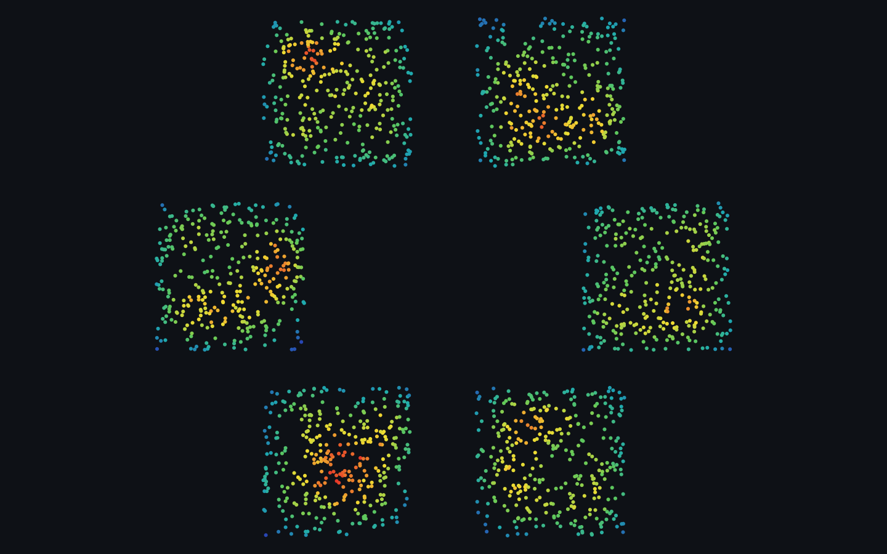
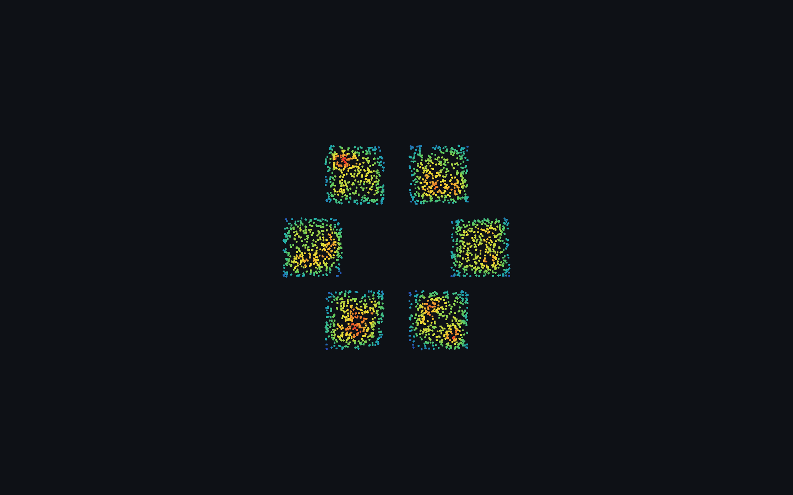
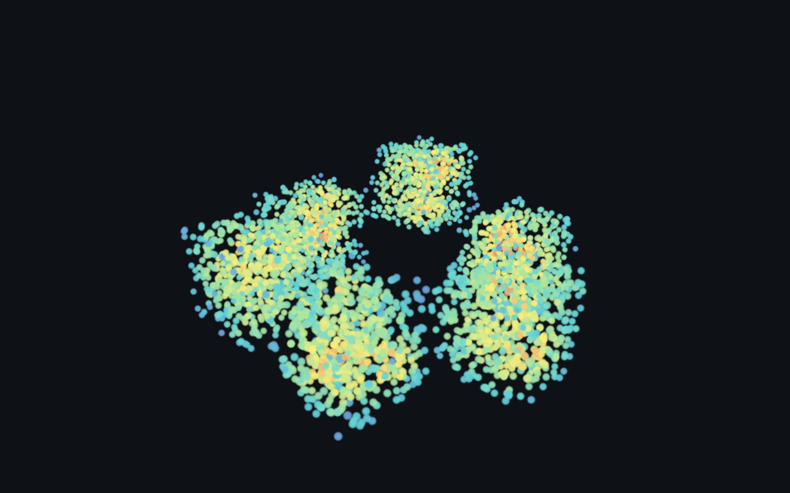
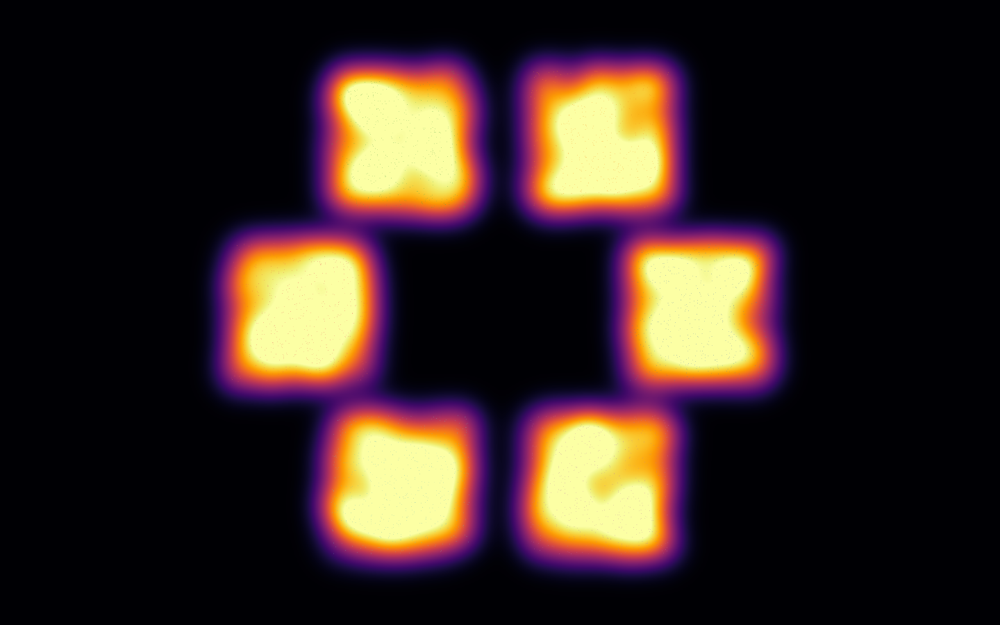

Screen-space aggregation of many points into a smooth density field — the “where is it dense” view. GPU-aggregated in deck.gl (HeatmapLayer); other renderers need a custom shader or don’t offer it.
Rendered on the real GPU and gate-verified — it draws, and the pixels change when the camera moves (not a frozen frame). Held 120 fps at 100,000 points.

Rendered on the real GPU and gate-verified — it draws, and the pixels change when the camera moves (not a frozen frame). Held 120 fps at 2,000 points.

Rendered on the real GPU and gate-verified — it draws, and the pixels change when the camera moves (not a frozen frame). Held 120 fps at 2,500 points.

Rendered on the real GPU and gate-verified — it draws, and the pixels change when the camera moves (not a frozen frame). Held 120 fps at 4,000 points.

Rendered on the real GPU and gate-verified — it draws, and the pixels change when the camera moves (not a frozen frame). Held 120 fps at 4,000 points.
| Library | Support | Notes |
|---|---|---|
| deck.gl | ✓ native · verified | GPU screen-space aggregation (HeatmapLayer, @deck.gl/aggregation-layers). |
| Sigma.js | ◑ workaround · verified | No native density primitive — renders a dense node cloud and colour-encodes each node’s local density (neighbours in a radius) on a blue→red ramp, the same approximation three.js uses. |
| cosmos.gl | ◑ workaround · verified | No native density primitive — computes each point’s local density (neighbours in a radius) and colour-encodes it via setPointColors (blue→red), the same approximation three.js uses. |
| three.js | ◑ workaround · verified | No built-in aggregation — computes local point density (neighbours in radius) and colour-encodes it (blue→red). |
| Helios-Web | ✓ native · verified | Native density plot — the config.density option runs a DensityGL kernel-density-estimation pass (GPU screen-space aggregation into a smooth field). Corrects the earlier survey that wrongly recorded this as unsupported. |
Reference: https://deck.gl/docs/api-reference/aggregation-layers/heatmap-layer